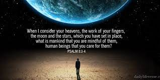

詩篇 第八篇
（大衛的詩，交與伶長。用迦特樂器。）迦特是腓利士人的城。大衛在逃避掃羅追捕、在躲避兒子押撒龍的流亡時，都曾經逃到這個地方。
讀：8:1耶和華─我們的主啊，祢的名在全地何其美！
禱：讚美上主的名，耶和華是平安、耶和華必有預備、耶和華是醫治、耶和華是我的牧者、耶和華是審判者、是赦罪者（～～～～等等）
讀：祢將祢的榮耀彰顯於天。
禱：祢將祢的榮耀彰顯於台灣、台南、OOO的家（自己，以及代禱對象）
讀：8:2 祢因敵人的緣故，從嬰孩和吃奶的口中，建立了能力，使仇敵和報仇的閉口無言。
禱：主阿！我們現在面對新冠疫情，好像仇敵一樣，但是祢透過教會弟兄姊妹的信心，建立能力，使攻擊我們的、敵對我們的，無話可說。
讀：8:3 我觀看祢指頭所造的天，並祢所陳設的月亮星宿，
禱：我觀察祢所創造的天，所擺放的日月星宿，祢所造的花草樹木，（令自己驚訝的奇妙創造），甚至祢所容許的新冠疫情災難。
讀：8:4 便說：人算甚麼，祢竟顧念他？世人算甚麼，祢竟眷顧他？
禱：我心裡感嘆說：人（我）是這樣的卑微、無助，祢卻這樣主動的眷顧我。
讀：8:5 祢叫他比天使（或譯： 神）微小一點，並賜他榮耀尊貴為冠冕。
禱：祢造了我，比天使微小一點，並藉耶穌基督寶血的救恩，賜給我榮耀、尊貴為冠冕。
讀：8:6～8 祢派他管理祢手所造的，使萬物，就是一切的牛羊、田野的獸、空中的鳥、海裡的魚，凡經行海道的，都服在他的腳下。
禱：祢分派任務給祢所造的人，就是我們，管理祢我造的萬物，就是牛羊、走獸、空中的鳥、海中的生物，包括我們生活中的寵物。我祈求祢讓我單單敬拜祢，不要讓這些受造物佔據我的心。
讀：8:9 耶和華─我們的主啊，祢的名在全地何其美！
禱：讚美上主的名，耶和華是平安、耶和華必有預備、耶和華是醫治、耶和華是我的牧者、耶和華是審判者、是赦罪者（～～～～等等）
再一次用讚美的禱告結束）
這是一首歌頌創造的讚美詩. 詩人在晚上仰首遠眺那萬里無雲、遼闊無邊的天空時, 突然察覺自己是何等的渺小, 卻能蒙這位創造之主的眷佑、大愛, 因而對這位神所發出的驚嘆與讚美.
詩人一開始提到耶和華, 我們神的名在全地何其美, 美到從祢所創造的星空中, 都在歌唱上帝的榮耀與偉大.這位上帝本來是沒有名字的, 但為什麼要創造一個名字呢? 在摩西之前, 上帝對亞伯拉罕、以撒、雅各甚至是約瑟, 都不用名字, 對以撒或其後代, 只有跟他們說, 是你父親或你祖先的上帝. 但到了摩西的時候, 卻需要一個名字, 或許是因為過去都是上帝與人直間面對面, 所以很清楚知道有位祖宗的上帝. 但到了摩西, 上帝沒有直接再向全以色列百姓說話了, 而是透過摩西. 或許是上帝知道這群百姓不敢讓上帝親近他們, 所以讓摩西代表上帝, 到人群中間.
我相信這位上帝, 過去喜歡親近人, 直到如今祂依然喜歡親近人. 但人因為有罪, 所以畏懼光, 不敢認識光, 但上帝自從造天地萬物以來, 就一直在給人機會可以尋找到祂, 藉由看見這些創造的萬物, 心生敬畏, 願意遠離罪惡, 恢復上帝原本造人的目的與原來尊貴的地位, 所以上帝給自己起了一個名字, 叫做那自有永有的, 也就是當我們發現這些受造之物, 不論是星空、海洋、山嶺或地上的一切受造之物的背後有一位設計者的時候, 就會跟上帝的名字產生共鳴, 也就會像詩人一樣, 激發出驚嘆與讚美了.
嬰孩的聲音具體證明了上帝在地上所建立的榮耀堡壘, 人類生生不息地延續, 是神確保最終在地上居住的一群新人當中得著榮耀的途徑. 只要地上有新生命的崛起, 不論是肉身所生或是重生之人, 就可再崛起一群大能的百姓, 回應上帝的創造, 並將榮耀歸給造天地之主, 這是敵人無法奪去的. 當初亞哈王和耶洗別將所有敬畏上帝的先知、祭司都給除掉, 以利亞感嘆只剩他一人的時候, 上帝告訴以利亞, 他錯了, 他還為自己留下七千人是未曾向巴力屈膝的, 因為這位上帝, 一直在締造新的生命, 縱然全人類選擇離棄上帝, 社會變得混濁不清, 依然還有新的生力軍的產生, 一個以利亞可以抵擋這麼多的假先知, 何況還會有敬畏上帝的新生命崛起, 讚美上帝的聲音是不可能因為敵人的關係而消失的, 除非可以將上帝所創造的萬物毀滅掉, 不然人依然可以再從上帝所創造的萬物來認識、讚美祂, 讚美的聲音會永遠不絕於耳地持續歌頌上帝, 終究有一天, 讚美的聲音要環繞天際, 讓那些以為可以阻礙上帝在地上榮耀彰顯的人, 啞口無言.
上帝的偉大全能, 從第三節就可以看出, 當然我們知道世界是由上帝的話所創造出來的, 但詩人這裡用指頭, 讓我們看到詩人細膩的方式, 將上帝描寫唯一位雕刻家, 相對於神, 諸天是渺小的, 是神的指頭揉捏而成的; 但是諸天在人的眼中看來, 卻是浩瀚無邊的, 相較之下, 顯得人類是何等的渺小. 面對於無垠的天際和井然有序的天體, 不禁讓詩人由衷的對上帝的眷佑發出莫名的感恩, 人倒底算甚麼, 要這位上帝大費周章地讓祂所造的人充滿榮耀? 為什麼就單單眷顧上帝所創造的人類呢? 很難想像, 人原本該有甚麼樣尊貴得榮耀吧, 上帝當初創造人類, 是給人極尊貴的形象, 因為我們是按上帝的形象所造, 不是外貌而已, 連裡面的特質也有上帝的形象, 讓人看到所造的人類, 就看到後面那位設計人類的上帝, 但人卻墮落到將上帝的形象踐踏在地上, 失去原本上帝為我們設計美好的神同在的樂園, 失去地上的管理權, 失去屬上帝的生命, 但上帝卻沒有因為這樣, 就丟棄祂所造的人.
祂讓祂所造的天地與其它的受造之物, 在人的四周繼續歌頌上帝的創造之美, 讓人看到所造的萬物, 重新再來認識這位上帝, 因為認識而降服, 因為認識而渴慕恢復上帝與人原本的關係, 當我們下次再聽到上帝的名時, 好好思想上帝為我們所做的一切, 祂所做的一切, 都是為著上帝要成為我們的天父, 恢復上帝與人之間的關係而努力的, 我們能不因為聽到上帝的名而讚美祂嗎?